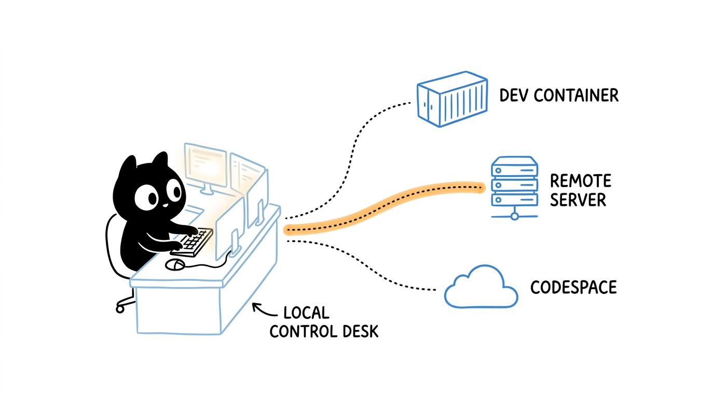

VS Code Remote Explorer: One Window, Many Environments

How to use Remote Explorer to work with DevContainers, SSH VMs, and GitHub Codespaces from a single VS Code window — and why it changes your daily workflow.
The Simple Definition
Remote Explorer is the VS Code panel that lets you connect to, manage, and switch between remote development environments — containers, virtual machines over SSH, GitHub Codespaces, WSL distros, and secure tunnels — all from the same editor window.
You stay in one VS Code. The environment your code actually runs in can be anywhere.
The Real-World Analogy
Think of an air traffic control tower.
- The controller never leaves the tower.
- But from that one seat, they can talk to dozens of aircraft, on different runways, going to different destinations.
- Each plane has its own crew, fuel, and flight plan — yet they all coordinate through the same console.
Remote Explorer is that console for engineers.
| Control Tower | Remote Explorer |
|---|---|
| The tower seat | Your local VS Code window |
| Each aircraft | A remote environment (container, VM, Codespace) |
| Radio channels | The Remote Development protocol |
| Flight plan | Workspace + extensions running remotely |
| Runway | The host where the code actually executes |
You change channels. The cockpit (your editor) stays the same.
What Remote Explorer Looks Like
Open it from the Activity Bar on the left — the icon that looks like a small monitor with a connection symbol. At the top of the panel, there is a dropdown that lets you switch between targets:
- Dev Containers — containers defined by
.devcontainer/devcontainer.json - SSH — remote hosts from your
~/.ssh/config - GitHub Codespaces — cloud-hosted dev environments
- Tunnels — secure connections to machines without public IPs (via
code tunnel) - WSL — Linux distros running on Windows
Each target shows recent connections, running sessions, and quick actions to start, stop, or open a new window.
The mental model is simple: pick a target type, pick a destination, open a folder. The rest behaves like local VS Code.
Use Case 1 — Dev Containers
Use this when your project ships with a .devcontainer definition and you want everyone on the team to develop in the exact same environment.
Common actions from Remote Explorer
- Reopen in Container — rebuild the current folder inside its container.
- Attach to Running Container — connect to a container that is already running (useful for debugging a service started by
docker compose). - Rebuild Container — pick this up after editing
devcontainer.jsonor the Dockerfile. - Recent Containers — jump back into a recent environment without reopening the repo.
Typical daily flow
git clone <repo>
code .
# Remote Explorer → Dev Containers → Reopen in Container
Within a minute or two, you have the right Python, the right Node, the right CLIs, and the right extensions — without touching your host.
Use Case 2 — SSH to a VM
This is the workhorse for working on cloud VMs, on-prem servers, or any Linux box you can reach via SSH.
Step 1 — Configure ~/.ssh/config
Remote Explorer reads your SSH config and lists every host. A clean config makes this experience excellent:
Host bastion
HostName bastion.example.com
User ritu
IdentityFile ~/.ssh/id_ed25519
Host build-vm
HostName 10.20.30.40
User ritu
IdentityFile ~/.ssh/id_ed25519
ProxyJump bastion
Host gpu-node
HostName gpu01.internal
User ritu
IdentityFile ~/.ssh/id_ed25519
ForwardAgent yes
ProxyJump is the key trick for environments where you have to go through a bastion host — Remote Explorer handles the hop transparently.
Step 2 — Connect
In Remote Explorer:
- Switch the dropdown to SSH.
- Click the host (for example,
build-vm). - Choose Connect in New Window.
VS Code installs a small VS Code Server on the remote host the first time you connect. After that, connections are fast.
Step 3 — Open a folder and start working
- Open any folder on the remote machine.
- Run terminals — they run on the VM, not locally.
- Forward ports automatically: if your app listens on
:8080, VS Code offers to forward it so you can hithttp://localhost:8080on your laptop.
What this is great for
- Developing against a VM that matches production.
- Working on GPU machines or high-memory boxes from a thin laptop.
- Editing infrastructure code directly on the jump host.
- Debugging an issue that only reproduces in a specific environment.
Use Case 3 — GitHub Codespaces
Codespaces are cloud-hosted dev environments built from the same .devcontainer definition you already use locally. Remote Explorer lets you drive them from your desktop VS Code instead of the browser.
Common actions
- Create New Codespace — pick a repo, branch, and machine size.
- Connect to Codespace — open an existing one in your local VS Code window.
- Stop / Start — codespaces auto-suspend, but you can manage them manually.
- Manage in Browser — jump to the GitHub UI for billing, machine type, retention.
Typical daily flow
- Open Remote Explorer → GitHub Codespaces.
- Pick the repo and branch.
- VS Code spins up the cloud environment, builds the dev container if needed, and connects.
- You code as if it were local — terminal, debugger, extensions, ports, all working.
Where Codespaces really shines
- Onboarding a new engineer in minutes, with zero local setup.
- Working from a low-powered device (including an iPad with VS Code in the browser).
- Spinning up disposable environments to review a PR safely.
- Using prebuilds so the environment is ready in seconds instead of minutes.
A Quick Word on WSL and Tunnels
Two more targets worth knowing about:
- WSL — develop inside a Linux distro on Windows, with native Linux tooling, while your editor runs on Windows.
- Tunnels (
code tunnel) — expose a machine that has no public IP and no SSH access, then connect to it from any VS Code (desktop orvscode.dev) using your GitHub identity. Useful for home labs, lab machines behind NAT, or short-lived debugging sessions.
Both show up in the same Remote Explorer dropdown.
How It Works Under the Hood
The reason all of this feels like one editor is a clean architecture:
- Local side: the VS Code UI — windows, menus, settings, themes, source control UI, key bindings.
- Remote side: a lightweight VS Code Server running on the container, VM, Codespace, or WSL distro. It hosts:
- the file system view
- the integrated terminal
- language servers and IntelliSense
- the debugger
- extensions marked as "workspace" extensions
- The link: a thin, multiplexed protocol over SSH, a container exec channel, a Codespaces connection, or a tunnel.
Extensions are split into two buckets:
- UI extensions stay local (themes, key bindings, vim emulation).
- Workspace extensions install into the remote (linters, debuggers, language tools).
This split is why you can run a heavy toolchain on a 64-core VM while your laptop barely warms up.
Why It Helps in Day-to-Day Development
A few concrete scenarios where Remote Explorer pays for itself fast:
1. Develop on Mac or Windows, build on Linux
Open the repo over SSH on a Linux VM. Builds, container tooling, and shell scripts all behave like Linux because they are on Linux.
2. Reproduce a production-only bug
SSH into a staging VM that mirrors production. Edit, run, and debug with the same paths, env vars, and network conditions as the real system.
3. Stop polluting your laptop
No more "I need to install yet another SDK." DevContainers and Codespaces keep project-specific tooling inside the project.
4. Switch projects in seconds
Remote Explorer remembers recent targets. Jumping from one client's environment to another is a two-click operation.
5. Work from anywhere
With Codespaces or tunnels, your dev environment is reachable from any device. A travel laptop, an iPad, even a borrowed machine — same setup, same extensions.
6. Consistent team environments
Everyone on the team opens the same container or Codespace definition. "Works on my machine" stops being a recurring conversation.
7. Safely test risky changes
Spin up a throwaway Codespace or VM, try a risky migration, blow it away. Your main environment is untouched.
Practical Tips
A few things that make the experience noticeably better:
- Use
ProxyJumpin~/.ssh/configfor bastion hosts. Remote Explorer will pick it up automatically. - Enable Settings Sync so your keybindings, snippets, and UI extensions follow you across every remote target.
- Use a dotfiles repo for Codespaces. Point GitHub at it and every new Codespace bootstraps your shell, aliases, and tools.
- Pin "Always Forward" ports in the Ports panel for the URLs you hit constantly.
- Be deliberate about UI vs workspace extensions. Themes belong locally. Linters belong remotely. The "Install in Remote" button in the Extensions view is your friend.
- Use
code tunnelon machines you cannot expose over SSH. It is surprisingly handy for home labs and air-gapped-ish environments. - Name your SSH hosts clearly —
prod-bastion,staging-app-01,gpu-node— they show up exactly like that in Remote Explorer.
Useful shortcuts
F1 → "Remote-SSH: Connect to Host..."
F1 → "Dev Containers: Reopen in Container"
F1 → "Codespaces: Create New Codespace"
F1 → "Remote: Close Remote Connection"
Key Takeaways
- Remote Explorer is the single control surface for DevContainers, SSH VMs, Codespaces, WSL, and tunnels — one window, many environments.
- The architecture is local UI + remote VS Code Server, which is what makes remote work feel native instead of laggy or limited.
- The daily benefit is consistency and mobility: the same editor, the same settings, and the right environment for each task — without reinstalling anything on your laptop.
Final Thought
The shift Remote Explorer enables is subtle but important: your laptop stops being the place where development happens, and becomes the place where development is controlled from. Once you start working this way — containers for project parity, SSH for production-like debugging, Codespaces for anywhere-access — going back to a single local environment feels like working with one hand tied behind your back.